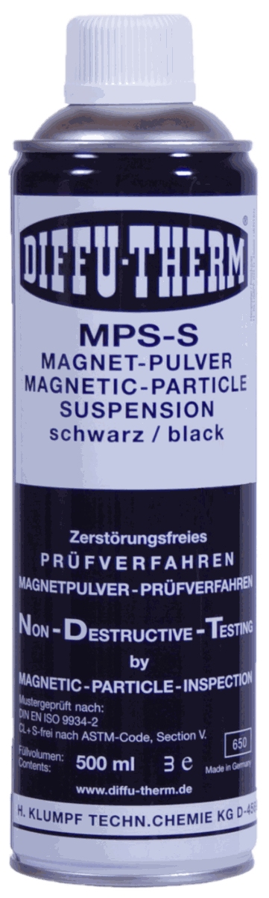
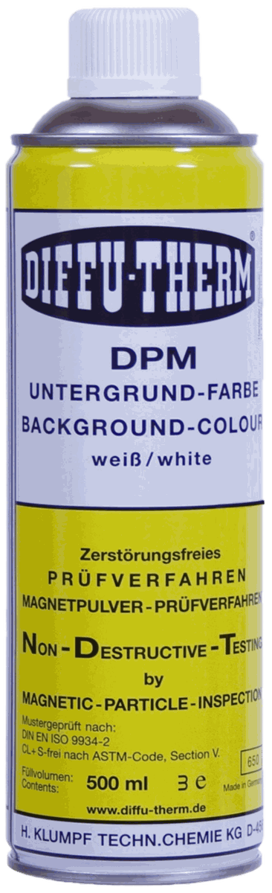

Fast Group Engineering cung cấp Diffu-Therm chính hãng Đức tại Việt Nam cho nhu cầu kiểm tra không phá hủy NDT. Bài viết này tập trung vào chỉ thị giả trong kiểm tra NDT và cách chuyển nhu cầu kỹ thuật thành RFQ rõ ràng.



Liên kết nên mở tiếp
- Mã sản phẩm hoặc ảnh nhãn.
- Tiêu chuẩn, vật liệu, nhiệt độ.
- Quy cách, số lượng, lead time.
Một chỉ thị xuất hiện trên bề mặt không đồng nghĩa với một khuyết tật. Người kiểm tra thiếu kinh nghiệm mắc lỗi theo cả hai chiều: báo cáo chỉ thị giả thành khuyết tật khiến chi tiết bị mài sửa hoặc loại bỏ oan, hoặc gạt một chỉ thị thật thành "chắc là bẩn" và cho qua.
Tiêu chuẩn phân biệt ba loại, và cách xử lý mỗi loại khác nhau.
Ba loại chỉ thị
1. Chỉ thị thật (relevant indication) — do khuyết tật thật trong vật liệu gây ra. Đây là thứ cần đánh giá theo tiêu chí chấp nhận của dự án.

Sơn nền tương phản. Bột từ kiểm tra MT Diffu-Therm dùng làm mã tham chiếu khi đối chiếu yêu cầu kỹ thuật và lập RFQ.
2. Chỉ thị không liên quan (non-relevant indication) — do một đặc điểm có thật của chi tiết gây ra, nhưng không phải khuyết tật. Ví dụ: mép ren, chỗ ép chặt, thay đổi tiết diện đột ngột, vùng biên giữa hai vật liệu. Chỉ thị này lặp lại đúng vị trí đó trên mọi chi tiết cùng loại.
3. Chỉ thị giả (false indication) — không do vật liệu mà do lỗi quy trình: bẩn, xơ vải, hóa chất còn sót, xử lý sai. Chỉ thị này không lặp lại khi làm đúng quy trình.
Phân biệt được ba loại này là phần lớn công việc thực sự của người kiểm tra. Việc phát hiện ra chỉ thị chỉ là bước đầu.
Chỉ thị giả trong kiểm tra thẩm thấu PT
Nguyên nhân thường gặp
Rửa thiếu ở bước loại bỏ phần dư. Chất thẩm thấu còn sót trên bề mặt tạo nền đỏ loang lổ. Dấu hiệu nhận biết: màu nhạt, ranh giới mờ, phân bố rộng không theo hình dạng nào, và thường đậm hơn ở vùng bề mặt nhám hơn.
Xơ vải và sợi bông từ giẻ lau. Rất hay gặp khi dùng phương pháp rửa dung môi. Chỉ thị có dạng đường mảnh, thẳng hoặc cong mềm, và nằm nổi trên lớp developer chứ không mọc ra từ dưới lên. Dùng kính lúp là thấy ngay.
Chất thẩm thấu nhiễm lên tay, găng, dụng cụ rồi dây lại lên chi tiết. Chỉ thị dạng vệt quệt hoặc dấu vân tay, hình dạng không có ý nghĩa cơ học nào.
Chi tiết đặt lên bề mặt đã bị nhiễm bẩn sau khi phủ developer.
Chất thẩm thấu chảy ra từ một khe hở gần đó — từ ren, mối ghép, khe hàn không thấu — rồi loang sang vùng đang đánh giá. Đây là ranh giới giữa "giả" và "không liên quan": bản thân khe hở là có thật, nhưng chỉ thị xuất hiện ở nơi không có khuyết tật.
Lớp developer quá dày và bị nứt khi khô, tạo mạng lưới đường mảnh trông giống nứt. Phân biệt: mạng lưới này phủ đều toàn vùng và có dạng hình học đều đặn, còn nứt thật thì đơn lẻ và theo hướng ứng suất.
Cách xác nhận lại
Khi nghi ngờ, quy trình xác nhận là làm sạch cục bộ vùng đó rồi lặp lại chu trình PT chỉ trên vùng nghi ngờ.
- Chỉ thị lặp lại đúng vị trí, đúng hình dạng → chỉ thị thật, hoặc không liên quan
- Chỉ thị không xuất hiện lại → chỉ thị giả
Điểm hay bị làm sai: khi làm lại phải làm sạch triệt để trước, vì chất thẩm thấu còn trong khuyết tật từ lần trước sẽ ảnh hưởng kết quả lần sau.
Chỉ thị giả và không liên quan trong kiểm tra hạt từ MT
MT có thêm một nhóm nguyên nhân mà PT không có: những thứ làm thay đổi đường sức từ mà không phải khuyết tật.
Chỉ thị không liên quan do hình học và vật liệu
Thay đổi tiết diện đột ngột. Chỗ chuyển bậc, rãnh, vai trục làm đường sức bị bóp lại và rò ra ngoài. Chỉ thị bám đúng theo đường hình học, và lặp lại y hệt trên mọi chi tiết cùng bản vẽ.
Vùng biên giữa hai vật liệu có tính từ khác nhau. Điển hình là biên giữa kim loại mối hàn và kim loại cơ bản, hoặc mối hàn nối hai mác thép khác nhau. Chỉ thị chạy dọc theo đường nóng chảy — một đường liên tục, đều, bám sát biên.
Vùng ảnh hưởng nhiệt sau hàn có cấu trúc kim loại khác vùng xung quanh, có thể tạo chỉ thị nhẹ và khuếch tán.
Từ hóa quá mức (over-magnetization). Khi cường độ từ trường quá cao, hạt bột từ bám khắp bề mặt tạo nền dày, che mất chỉ thị thật. Cách xử lý: khử từ, giảm cường độ, làm lại.
Từ trường dư từ lần từ hóa trước theo hướng khác, chưa được khử.
Chỉ thị giả do quy trình
Nồng độ huyền phù quá cao — hạt bám lan man khắp nơi. Đây là lý do việc kiểm tra nồng độ bằng ống lắng không phải thủ tục hình thức.
Bề mặt nhám, gỉ hoặc còn xỉ hàn giữ hạt bột từ một cách cơ học, không liên quan gì tới từ trường.
Vết xước hoặc dấu đục trên bề mặt.
Lớp nền tương phản DPM phủ quá dày và bị nứt, giữ hạt trong các vết nứt của lớp sơn.
Dòng điện đi qua điểm tiếp xúc của prod để lại vết cháy nhỏ, và chính vết cháy đó tạo chỉ thị.
Cách xác nhận lại trong MT
Ba cách, dùng kết hợp:
- Khử từ rồi từ hóa lại theo hướng khác. Chỉ thị thật do khuyết tật sẽ đổi độ rõ theo hướng từ trường; chỉ thị do bám cơ học thì không đổi.
- Làm sạch cục bộ rồi làm lại — như với PT.
- Kiểm tra chéo bằng PT nếu khuyết tật nghi ngờ là hở ra bề mặt. PT không phụ thuộc từ trường nên loại trừ được toàn bộ nhóm nguyên nhân từ tính.
Đặc điểm nhận dạng của chỉ thị thật
Không có quy tắc tuyệt đối, nhưng có những dấu hiệu đáng tin:
| Đặc điểm | Chỉ thị thật thường có | Chỉ thị giả thường có |
|---|---|---|
| Ranh giới | Sắc, rõ | Mờ, loang |
| Sự phát triển theo thời gian (PT) | Nở dần và đậm lên trong thời gian hiện hình | Xuất hiện ngay từ đầu rồi đứng yên |
| Hướng | Có ý nghĩa cơ học — theo hướng ứng suất, dọc mối hàn, vuông góc tải trọng | Ngẫu nhiên, hoặc theo hướng thao tác của người kiểm tra |
| Lặp lại sau khi làm sạch và làm lại | Có | Không |
| Vị trí | Ở vùng ứng suất tập trung, chân mối hàn, chỗ chuyển tiếp | Ở bất kỳ đâu |
| Nhìn dưới kính lúp | Mọc lên từ bề mặt, có gốc | Nằm trên bề mặt |
Dấu hiệu mạnh nhất trong PT là tốc độ phát triển. Khuyết tật sâu chứa nhiều chất thẩm thấu nên chỉ thị nở liên tục và đậm dần. Đây là lý do tiêu chuẩn yêu cầu quan sát trong suốt thời gian hiện hình chứ không nhìn một lần lúc cuối — nhìn một lần thì mất hẳn thông tin này.
Ba nguyên tắc xử lý khi gặp chỉ thị nghi ngờ
1. Không tự ý mài sửa để "xem thử". Mài mất chỉ thị thì mất luôn bằng chứng, và nếu đó là khuyết tật thật thì đã can thiệp vào chi tiết ngoài quy trình. Phải ghi nhận, chụp ảnh, đánh dấu vị trí trước đã.
2. Ghi nhận cả chỉ thị đã loại. Biên bản nên ghi có chỉ thị tại vị trí nào, đã xác nhận lại bằng cách nào, và kết luận là loại gì. Biên bản chỉ ghi "không phát hiện khuyết tật" mà không nhắc gì đến các chỉ thị đã xử lý sẽ khó bảo vệ khi bị chất vấn.
3. Chỉ thị lặp lại ở cùng vị trí trên nhiều chi tiết là tín hiệu, không phải sự trùng hợp. Hoặc đó là đặc điểm hình học của bản vẽ — tức chỉ thị không liên quan; hoặc đó là khuyết tật hệ thống do một bước công nghệ sinh ra. Cả hai đều đáng báo lên, và cái thứ hai thì đáng báo gấp.
Giảm chỉ thị giả từ khâu chuẩn bị
Phần lớn chỉ thị giả sinh ra từ ba chỗ, và cả ba đều xử lý được trước khi bắt đầu:
- Làm sạch trước không kỹ — gỉ, dầu, xỉ hàn, chất đánh bóng còn sót
- Giẻ lau sinh xơ — dùng giẻ không xơ (lint-free), không dùng giẻ vải thường
- Nồng độ và độ sạch của vật tư — huyền phù bột từ nhiễm bẩn hoặc quá đặc, chất thẩm thấu bị pha loãng bởi dung môi còn sót từ bước làm sạch
Một quy trình chuẩn bị kỹ giúp giảm phần lớn chỉ thị giả, và thời gian bỏ ra ở khâu này luôn nhỏ hơn thời gian phải xác nhận lại từng chỉ thị nghi ngờ về sau.
Nhận báo giá Diffu-Therm
Gửi mã hàng, số lượng, quy cách đóng gói và yêu cầu chứng từ qua email minhduc@fastgroup.vn hoặc Zalo/điện thoại (+84) 938 888 958.